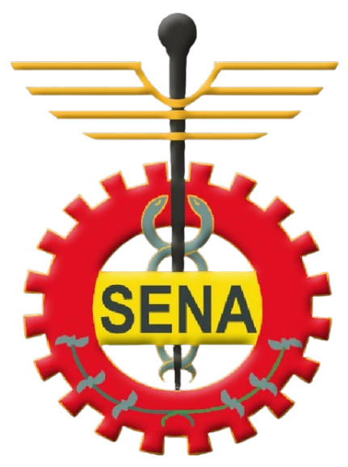
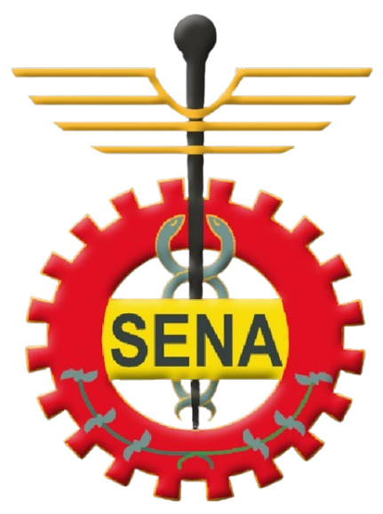
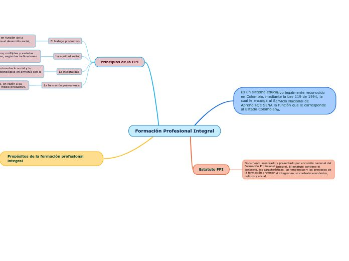

|
 |
|
|
 |
El logosímbolo representa gráficamente los enfoques de la formación que impartimos en la que el individuo es el responsable de su propio proceso de aprendizaje.
El escudo y la bandera del SENA, fueron diseñados cuando se fundó nuestra institución y reflejan los tres sectores económicos dentro de los cuales operamos:
1.El piñón, representativo del sector industria.
2.El caduceo, asociado al de comercio y servicios.
3.El café, ligado al primario y extractivo
La Formación Profesional Integral (FPI), ofrecida principalmente por el Servicio Nacional de Aprendizaje (SENA) en Colombia, es un proceso educativo que busca desarrollar conocimientos, habilidades, actitudes y valores en las personas para su participación activa en el trabajo y la sociedad. Se centra en la formación técnica y tecnológica, pero también incluye aspectos sociales, éticos y culturales, promoviendo la formación integral del individuo.

Características principales de la FPI:
🟢 Integralidad:
Busca equilibrar la formación técnica con el desarrollo humano y social, abarcando aspectos como el saber, el hacer, el ser y el convivir.
🟢 Formación para el trabajo:
Prepara a las personas para desempeñarse en un oficio u ocupación específica, proporcionando las herramientas técnicas y tecnológicas necesarias.
🟢 Desarrollo de competencias:
No solo se enfoca en la adquisición de conocimientos, sino también en el desarrollo de habilidades, actitudes y valores que permitan a los aprendices desenvolverse de manera eficaz en el ámbito laboral y social.
🟢 Innovación y adaptación:
Fomenta la capacidad de aprender a aprender, la autogestión y la adaptación a los cambios constantes del entorno productivo.
🟢 Participación activa:
Promueve la participación de los aprendices en la toma de decisiones y en la transformación de su contexto social y productivo.
Un Tecnólogo en Implementación de Infraestructura de Tecnologías de la Información y las Comunicaciones (TIC) del SENA se especializa en instalar, configurar, mantener y optimizar infraestructuras tecnológicas que permiten el funcionamiento de redes, servidores, equipos y servicios digitales en empresas y organizaciones.

Misión
El SENA está encargado de cumplir la función que le corresponde al Estado de invertir en el desarrollo social y técnico de los trabajadores colombianos, ofreciendo y ejecutando la formación profesional integral, para la incorporación y el desarrollo de las personas en actividades productivas que contribuyan al desarrollo social, económico y tecnológico del país (Ley 119/1994).
Visión
Para el año 2026, el Servicio Nacional de Aprendizaje - SENA estará a la vanguardia de la cualificación del talento humano, tanto a nivel nacional como internacional. Esto se logrará a través de la formación profesional integral, el empleo, el emprendimiento y el reconocimiento de aprendizajes previos. Nuestro objetivo es generar valor público y fortalecer la economía campesina, popular, verde y digital, siempre con un enfoque diferencial orientado a la construcción del cambio, la transformación productiva, la soberanía alimentaria y la consolidación de una paz total, materializando así la autonomía territorial, y promoviendo la justicia social, ambiental y económica.

|

|